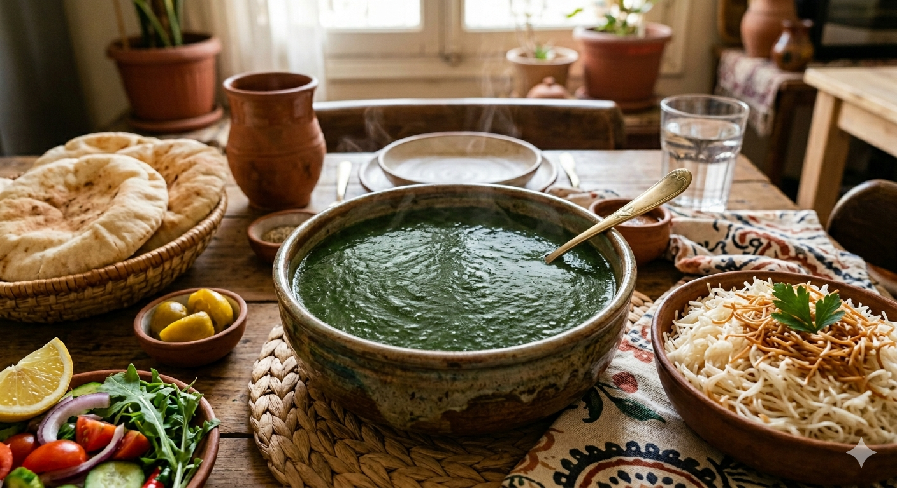

Molokheya

Home
Description
This mean green soup is rich in flavor from the addition of garlic and coriander. Not long ago, and in many homes of rural Egypt today,
the jute plants were bought fresh. Leaves were removed one at a time, put together on a huge cutting board then, and using a mezzaluna,
they were finally chopped. As you can imagine,
this is a long process. Today, inside and outside Egypt, everyone buys the Molokheya frozen and the taste is just as good.
Ingredients
- 1 lb (400 gm) Frozen finely chopped Jute / Molokheya Leaves
- 4 cups chicken or vegetable broth
- 1 tsp salt or to taste
- 1/2 tsp cardamon powder
- 2 Tbs butter or cooking oil
- 6 garlic cloves, crushed
- 4 tsp coriander powder
Steps
- In a saucepan combine the broth, frozen molokheya, salt and cardamon.
- Over medium heat, warm up the molokheya until it’s fully defrosted. Stir occasionally. This process will take about 15 minutes.
- The most important step is to time the preparation of the garlic dressing,
so that it’s ready as soon as the molokheya is all defrosted and the soup is beginning to boil. Preparing the garlic dressing takes about 5 minutes.
- To prepare the garlic dressing, melt the butter in a small pan over medium high heat.
- Add the garlic and coriander to the melted butter.
- Stir fry until the garlic takes on a light golden brown color.
- As soon as the molokheya is beginning to boil, add the garlic dressing and quickly cover the saucepan.
Covering the saucepan will allow the smell of the dressing to be infused in the soup.
- Ten seconds after, remove the cover. Warm up the soup again without bringing it to a boil.
- Now it’s ready to serve with the pickled onions, pita bread and steamed rice.